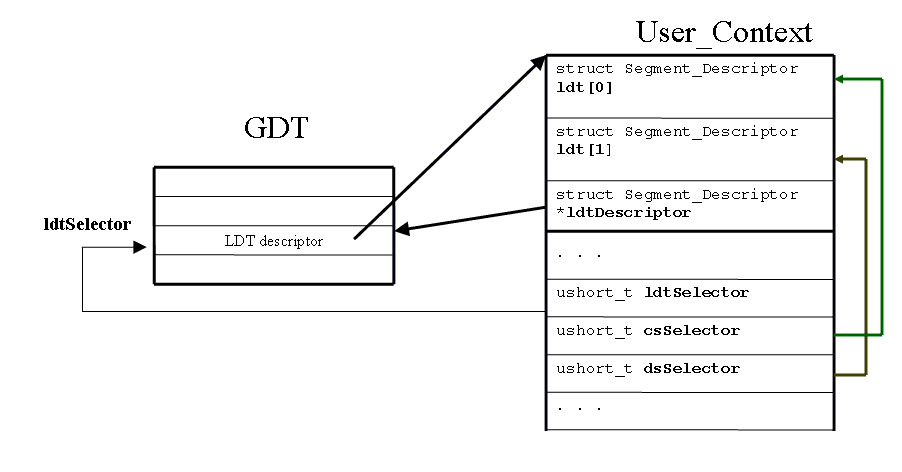

Note that the original project code was not configured to properly use Cyclone. The code sbould now be fixed.
In project 1, you wrote code that parsed an executable and prepared it to be run. The actual running of the program was handled by code that we supplied. The code was run in kernel mode, i.e. with full privileges, in a potentially unsafe manner. In this project, you will add code to GeekOS that will allow it to run user programs, i.e. programs executing safely, at lower privilege.
Much of this project description provides background information on some operating system concepts, how the Intel x86 processors (above 386) work, and how GeekOS works. This should make it easier to understand the GeekOS code and to understand what you have to do for the project.
If you already know all of this, you can skip ahead to the Project Requirements section, which describes exactly what you have to do for this project.
In writing an operating system, you want to make a distinction between the things that operating system code are allowed to do and the things user programs are allowed to do. The goal is to protect the system from incorrect or malicious code that a user may try to run. Bad things a program could do include:
Preventing these sorts of mistakes or attacks is accomplished by controlling the parts of memory that can be accessed when user code is running and limiting the set of machine operations that the user code can execute. The 386 processor provides the operating system with facilities to support these controls.
A program that is running in this sort of controlled way is said to be running in user mode.
(also see section 2.5.1 Dual-Mode Operation in the textbook, but note that the mode bit discussed in the textbook is replaced by a privilege level in GeekOS.)
(Also see chapter 9 in the textbook)
The facility that the processor provides for dividing up memory is its handling of memory segments. A memory segment specifies a region of memory and the "privilege level" that is required to access that memory. Each user program has its own memory segments - one for code, one for data, one for its stack, plus a couple extra for various purposes. If the operating system sets up the segments properly, a program will be limited to accessing only its own memory.
Privilege levels range from 0 to 3. Level 0 processes have the most privileges, level 3 processes have the least. Protection levels are also called rings in 386 documentation. Kernel processes will run in ring 0, user processes will run in ring 3. Besides limiting access to different memory segments, the privilege level also determines the set of processor operations available to a process. A program's privilege level is determined by the privilege level of its code segment.
If a process attempts to access memory outside of its legal segments, the result should be the all-too-familiar segmentation fault, and the process will be halted.
Another important function of memory segments is that they allow programs to use relative memory references. All memory references are interpreted by the processor to be relative to the base of the current memory segment. Instruction addresses are relative to the base of the code segment, data addresses are relative to the base of the data segment. This means that when the linker creates an executable, it doesn't need to specify where a program will sit in memory, only where the parts of the program will be, relative to the start of the executable image in memory.
The information describing a segment is stored in a data structure called a segment descriptor. The descriptors are stored in descriptor tables. The descriptor tables are located in regular memory, but the format for them is exactly specified by the processor design. The functions in the processor that manipulate memory segments assume that the appropriate data structures have been created and populated by the operating system. You will see a similar approach used when you work with multi-level page tables in a future project.
There are two 1 types of descriptor tables. The Local Descriptor Table (LDT) stores the segment descriptors for each user process. There is one LDT per process. The Global Descriptor Table (GDT) contains information for all of the processes, and there is only one GDT in the system. There is one entry in the GDT for each user process which contains a descriptor for the memory containing the LDT for that process.
Since all kernel processes are
allowed to access all of memory, they can all share a single set of
descriptors, which are stored in the GDT.
The relationship between GDT, LDT and User_Context entries is explained in this picture.
These registers do not contain the actual segment descriptors. Instead, they contain Segment Descriptor Selectors, which are essentially the indices of descriptors within the GDT and the current LDT.
The memory segments for a process are
activated by loading the address of the LDT into the LDTR and the
segment
selectors into the various segment registers.
You might want to review sections 3.1, 3.4, 3.4.1, 3.4.3 (pages 3-1, 3-6 thru 3-12) in the Intel manual for details.
In GeekOS, there is a distinction between Kernel Threads and User Threads. As you would expect, kernel processes run as kernel threads, while user processes run in user threads.
A kernel thread is represented by a Kernel_Thread structure (in include/geekos/elf.h)
struct Kernel_Thread {
unsigned long esp; // offset 0
volatile unsigned long numTicks; // offset 4
int priority;
DEFINE_LINK( Thread_Queue, Kernel_Thread );
void* stackPage;
struct User_Context* userContext;
struct Kernel_Thread* owner;
int refCount;
.........................
};
In a sense, the most important
fields of a kernel thread structure are those that specify where the
thread's
stack is, namely stackPage and esp. Each kernel thread
has a stack
associated with it. Besides being used as a regular stack while
executing within the kerenel (for keeping
track of local variables, function arguments, return addresses and so
forth), the kernel stack is where the operating
system stores the execution context when it switches away from a thread
(either to run a
different thread or to handle an interrupt). This context
includes the general-purpose registers and segment registers, among
other things.
The kernel thread contains all of the mechanisms necessary to run and schedule a process. In order to represent user threads, GeekOS includes an extra field in the Kernel_Thread structure that points to a User_Context structure. In a thread representing a kernel process, the User_Context will be null. The User_Context is defined in in include/geekos/user.h.
In a user thread, the User_Context structure will contain all of the information that only applies to user processes, like the location of the process' LDT and the location of the executable image. The "kernel" parts of the thread are used by the OS to schedule the thread, while the "user" parts represent the specific user program being run.
User threads have two different
stacks associated with them. The kernel part of the thread has a stack
that is created when the thread is
created. The executable image has a stack that you created when you set
up the
executable image. The kernel stack (sometimes called the thread
stack),
is used by OS for saving context information, and for local variables
used by the user process when running in kernel mode. The user stack
is
used as the program stack for local variables and so forth when running
the user program.
As discussed above, before a context switch, the OS saves the thread context information by pushing it onto the kernel stack associated with the thread. (The 386 provides a different mechanism for saving thread state, via the TSS structure, but GeekOS does not use this mechanism.)
To prepare a thread to be run for the first time, GeekOS sets up the kernel stack to look as if the thread had previously been running and then context-switched to the ready queue. To present this illusion requires setting up the kernel stack properly. In particular, we must push the initial values for all of the processor registers onto the kernel stack when the thread is created. When the thread is scheduled for the first time, these initial values will be loaded into the processor registers and the thread can run.
One example of an initial value
that will be loaded into a register is the instruction pointer (EIP).
GeekOS pushes the entry point for the process and this value will be
subsequently loaded into EIP. In the case of a kernel process,
this will be the function that was passed to Start_Kernel_Thread() to
create
the thread.
(Also see chapter 3 of the textbook)
The operating system uses segmented memory to limit a process to only accessing memory belonging to that process. But sometimes a program will need to interact with the system in ways that require it to access other memory. For example, if the program wants to write to the screen, it may need to access video memory, which will be outside of the process's segment. Or a program may want to call an OS routine - the Print routine, for example - which is stored outside of the process's segment.
To allow a user program to access system memory in a controlled way, the operating system provides a series of System Calls, also known as Syscalls. A syscall is an operating system routine that carries out some operation for the user program that calls it. But since these routines are themselves in protected memory, the OS provides a special mechanism for making syscalls.
In order to make a syscall, a user program sends a processor interrupt, using the int instruction. GeekOS has provided an interrupt handler that is installed as interrupt 0x90. This routine, called Syscall_Handler (src/geekos/trap.c), examines the current value in the register eax and calls the appropriate system routine to handle the syscall request. The value in eax is called the Syscall Number. The routine that handles the syscall request is passed a copy of the caller's context state, so the values in general registers (ebx, ecx, edx) can be used by the user program to pass parameters to the handler routine and can be used to return values to the user program.
The syscall stubs are already defined for you in src/geekos/syscall.c: Sys_Null, Sys_Exit, etc. You'll need to fill in the code that does the following:
Before the system handles a system call - actually, before handling any kind of interrupt - the thread context is saved and the active segments are switched to the kernel segments, so all of memory can be legally accessed. Before returning from the syscall, the previous context is restored so that the program can continue running. A pointer to the stored copy of the context - on the kernel stack - is actually what is passed to the Syscall_Handler.
Because arguments are always passed to syscalls through registers, you are limited to passing 32-bit values, such as ints. If you want to pass a larger argument, a structure, say, or you want to pass a string, you will need to pass a pointer to the argument instead of passing the argument.
A problem arises when the syscall handling function wants to use the pointer. Because the pointer is generated by the user program, it will be a pointer that is relative to the base of the user program's memory. When the interrupt handler is running, it will be using a data segment that spans all of memory. The handler will need to convert the pointer from user space to kernel space. You will write code to do this conversion as part of the Copy_From_User function described below.
It is also critical that your Copy_From_User function ensures that any memory to be copied from a user program really belongs to that user program. This is necessary to prevent a malicious user program from passing a bad pointer which could cause the kernel to access memory that does not belong to the user process (or worse yet invalid memory and thus causing the kernel to crash).
This project will require you to make changes to several files. In general, look for the calls to the TODO() macro. These are places where you will need to add code, and they will generally contain a comment giving you some hints on how to proceed.
For project 2, you will need to
add the code necessary to create user threads running executables from
files in
the filesystem. You will also need to implement a collection of
syscalls and a
user library of functions to call the syscalls.
The top-level function for launching user programs is Spawn() in the file src/geekos/user.c. This function will have to do the following (see the comments in user.c as well)
You should copy your implementation of Parse_ELF_Executable from Project 1 into the new elf.c.
size = Round_Up_To_Page(highest virtual address) + Round_Up_To_Page(DEFAULT_USER_STACK_SIZE + argument block size)
The User_Context structure stores in it all of the information that will be needed to setup and run a user thread. To implement Create_User_Context(ulong_t size), you will need to do the following things:
Notes on these steps:
There will only be two segments for each user program: code and data. The data segment, the stack segment, and the extra data segments will all be in a single segment that we will heretofore call the data segment.
Even though the vaddr for the data segment indicates that the start of the data segment is offset from the start of the executable image, the data segment you create should always have its base at the start of the executable image. The files we will be working with are linked such that the memory references in the data segment are aligned as if the data segment started at the beginning of the executable image. For example, say the data.vaddr were 100. If there were a data item at the first address of the data segment, its address would not be 0 - even though it is at the very start of the data segment. Its address would be 100, since the address is calculated as the offset from the beginning of the executable image.
The base of the code segment will also be at the beginning of the executable image. In this case, the vaddr actually indicates this.
There are examples in the GeekOS code of how to create descriptors and selectors, though these examples are always putting the descriptors in the GDT. You can also look at the code that we included for project 1, which contains another example. GeekOS provides a variety of functions for these operations, so look around before you start writing.
The relationship between GDT entries, LDT and User_Context entries is depicted below
Note that the selectors are not pointers, but rather 'fancy indexes'. You create selectors from indexes using the Selector(...,index) function.
After setting up the memory segments for the new process, Spawn_User_Program will call Start_User_Thread() in src/geekos/kthread.c. Start_User_Thread, which you will write, does the following:
Notes on these steps:
The steps involved in creating a new user thread are very similar to those involved in creating a new kernel thread. Tracing through the Start_Kernel_Thread function will help you understand what you need to do and what functions already in GeekOS can be useful.
The initial stack state for a user thread should look like:
| Stack Data Selector (data selector) |
| Stack Pointer (end of data memory) |
| Eflags |
| Text Selector (code selector) |
| Program Counter (entry addr) |
| Error Code (0) |
| Interrupt Number (0) |
| EAX (0) |
| EBX (0) |
| ECX (0) |
| EDX (0) |
| ESI (Argument Block address) |
| EDI (0) |
| EBP (0) |
| DS (data selector) |
| ES (data selector) |
| FS (data selector) |
| GS (data selector) |
The items at the top of this diagram are pushed first, the items at the bottom are pushed last.
The routine Push in (src/geekos/kthread.c) can be used to push individual values and the routine Push_General_Registers will push all of the general-purpose registers at once. For Eflags, you can follow the model used for setting up a kernel thread.
The stack pointer should indicate an empty stack. The user process stack you created starts at the very end of the executable image (as is typically the case, the stack "grows down" from higher memory addresses to lower ones.) The stack pointer should be specified as an address relative to the beginning of the executable image, not as an absolute address in memory.
To give the impression of processes running concurrently, the kernel switches contexts among processes, thus giving each process a small time quantum to run.
For every context switch, the kernel calls Switch_To_User_Context() in (src/geekos/user.c), because context switching user threads entails additional work.
The kernel threads have a NULL userContext, whereas for user threads, this context is non-NULL (see struct Kernel_Thread above). This is how you differentiate between user and kernel threads. When implementing Switch_To_User_Context() you need to switch the current user context as follows: if the new thread (passed as argument) is a kernel thread, obviously you don't need to do anything; but if the new thread is a user thread, you have to:
Set_Kernel_Stack_Pointer(((ulong_t) kthread->stackPage) + PAGE_SIZE);
For Switch_To_Address_Space you need to load the LDT of the new thread (ldtSelector of User_Context) using the "lldt" assembly instruction. For some hints on how to do this, look at how Load_Task_Register() is implemented in src/geekos/tss.c.
In Load_User_Program() you will also need to create an Argument_Block data structure and attach it to the process image. This data structure contains the argc and argv arguments that are passed to the main() function of the user process (via the ESI register, see src/libc/entry.c).
Two functions are defined to help you build the argument block (prototypes in include/geekos/argblock.h):
Note that you will need to take the size of the stack and argument block into account when you decide how much memory to allocate for the process.
After you have completed the project to this point, your code is able to load a user program and spawn it. In order to test this out, you can try loading the user program /c/null.exe. This program just calls the NULL syscall (which you must implement. i.e print a string in Sys_Null()). If the program is able to call the NULL syscall successfully, you are in good shape.
The project has code in main.c that spawns /c/shell.exe when the operating system boots up. To test, you will need to replace this code with a call to load /c/null.exe.
You will need to implement a couple of syscalls in GeekOS, by filling in the syscall handlers in src/geekos/syscall.c.
Your kernel should support the following system calls:
SYS_NULLThe user function prototypes are declared in various headers files in the include/libc directory.
In order to implement SYS_PRINTSTRING and SYS_SPAWN, you will need to implement the function Copy_From_User(void* destInKernel, ulong_t srcInUser, ulong_t bufSize) that is stubbed in src/geekos/userseg.c. This will be needed so that you can access the strings that are passed as arguments to these functions.
The point of validating the pointer is that we do not want to allow an incorrect or malicious program to view the contents of protected memory by passing a pointer that is outside of the process' data segment. This is even more important for Copy_To_User, where a program could cause the kernel to write arbitrary data to an arbitrary location in memory - which is a bad thing.
Copy_From_User must do the following:
On a similar note, you'll implement Copy_To_User(ulong_t destInUser, void* srcInKernel, ulong_t bufSize) which is very similar to Copy_From_User() above, except that data flows from kernel to user space. You'll need it when you store data in user space (e.g. for SYS_GETCURSOR). The only difference is that in this case you should check the validity of destInUser. The functions Copy_From/To_User should be generic and simply validate and copy memory.
Note: Copy_To_User/Copy_From_User do not allocate/free any buffers. The caller takes care of that.
For SYS_PRINTSTRING you should ensure that the supplied string is
not larger than 1024 characters, and for SYS_SPAWN not larger than
VFS_MAX_PATH_LEN. You must ensure that destInKernel is
terminated with a \0 at either the user-supplied size (length,
which comes in state->ecx). You may use a third function
to ensure this proper termination
or put the code directly in both SYS_PRINTSTRING and SYS_SPAWN
Stay tuned! Soon we'll have some extra information here
suggesting how you might use Cyclone for this project.
{kind=link}